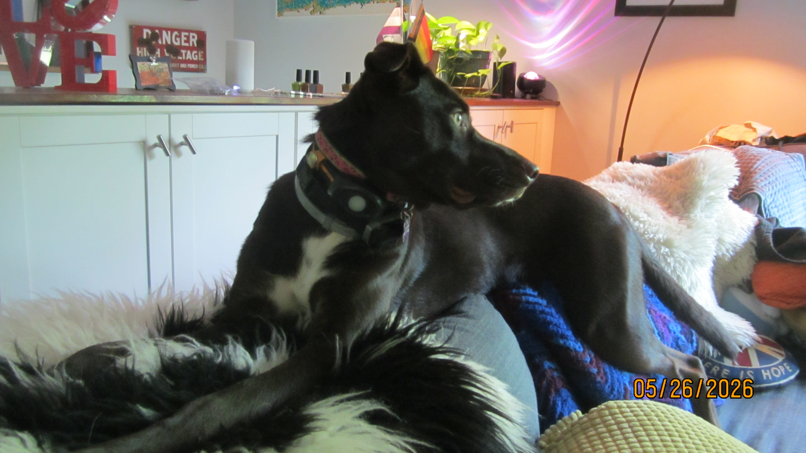

First Blog! — Feb 26, 2026
This is where I will share thoughts about life, tech, whatever. I don't really know yet.

Hyprland Setup! — May 29, 2026
After using Linux Mint XFCE for a few months and loving it, I wanted to switch to Arch Linux because of the rolling release model and lightweight nature of the system. Somehow, the installation process went smoothly and I got Arch installed. I then wanted to try a tiling window manager, and I landed on Hyprland. Unlike regular stacking window managers such as macOS, GNOME, or Windows, every time you open a window on Hyprland it automatically tiles. This is super useful for students because it's easy to keep multiple apps open at the same time. As a CS student and a high school student taking advanced classes, this helps me multitask and stay productive. I've attached my dotfiles and screenshots below.